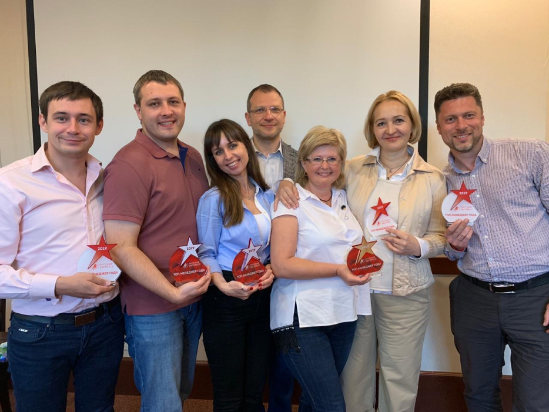
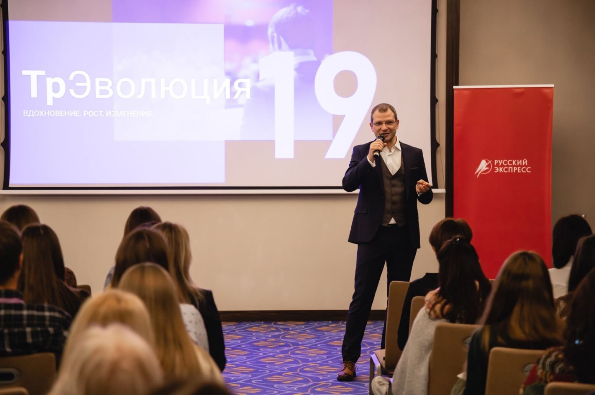

В 2021 году холдинг «Русский Экспресс» отметил 25-летие.
Рассказываем про основные вехи его истории.
В 2021 году холдинг «Русский Экспресс» отметил 25-летие.
Рассказываем про основные вехи его истории.
1996
год основания
В 2001 году компания, насчитывающая более 25 сотрудников, оставляет одно название – «Русский
Экспресс».
Компания была организована в 1996 году. Тогда она работала под двумя брендами – «Русский
Экспресс» и «Европа 2000», а команда состояла из генерального директора, Тараса Кобищанова и
семи сотрудников. Офис располагался в историческом здании Министерства транспорта на
Софийской набережной, где в 1999 году произошел пожар. Сгорели паспорта туристов, документы.
Несмотря на серьезный удар, компания продолжила деятельность.
В этом же году фирма переехала в офис на Смоленской площади, где проработала вплоть до 2015
года.
«Русский Экспресс» работает как с VIP-сегментом, так и поднимает чартеры.
В 2005 году компания становится членом IATA.
В 2006 году открывается офис в Санкт-Петербурге, в 2007 году – в
Екатеринбурге. Представительства «Русского Экспресса» появились во всех городах-миллионниках, а в
городах
поменьше – сеть уполномоченных агентств. Холдинг присутствовал более чем в 60 городах по всей РФ.
В 2007 году появляется Online Express, платформа для бронирования отдельных туруслуг.
В 2007 году появляется Online Express, платформа для бронирования отдельных туруслуг.
В 2008 году наступает мировой финансовый кризис, за которым идет череда банкротств крупнейших
туроператоров.
«Русский Экспресс» не только пережил это сложное время, но и использовал его с максимальной пользой.
В 2010 году прошла интеграция с туроператором «Аврора Интур», в «Русский Экспресс» переходят
сильные
специалисты по внутреннему туризму, холдинг усиливает позиции по РФ.
«Нам важно, чтобы агентства были максимально ориентированы на продукт, создаваемый компанией. Чтобы они не искали по рынку, с кем отправить туриста, а сотрудничали именно с «Русским Экспрессом»,– оценивает то время Тарас Кобищанов
Холдинг стал по-настоящему многопрофильным оператором, в линейке уже более 70 стран. «Русский
Экспресс»
активно участвовал в выставках, ставил чартерные программы, организовывал масштабные фам-трипы для
агентов и
приобрел еще ряд компаний:
в 2011 году – туроператора «Тревел Гарант» и принимающую компанию в Чехии CrystalTour,
в 2012 году – туроператора «UTE Мегаполюс турс», долю в туристической сети «1001 тур» и
портале
Turizm.ru. В
это же время развивался собственный франчайзинг, расширялась собственная сеть агентств холдинга.
В 2014 году происходит валютный кризис. Это время назвали «самым сложным годом для туризма».
Начинается новая череда банкротств туроператоров. «Русский Экспресс» тогда насчитывал уже более 350
сотрудников.
После кризиса эта цифра была сокращена почти вдвое. Были закрыты все региональные представительства,
кроме
Санкт-Петербурга и Екатеринбурга, заморожена программа «Уполномоченных агентств». Московский офис в
2015 году
переехал на Земляной вал, где находится до сих пор.
В 2016 году в компании многое изменилось: структура холдинга, бизнес-процессы, обновилась команда топ-менеджеров. Появился новый формат бонусной программы «Драгоценные агенты», благодаря чему выросло число лояльных партнеров. Усилился контроль над сервисом, были введены различные форматы оценки работы сотрудников. Компания стала гораздо технологичнее, не только реализовала «красную кнопку» продажи туров GDS, но и начала активно развивать «Онлайн Экспресс».
Нам удалось воспользоваться тем «окном возможностей», которое открылось в 2015 году. Объем продаж увеличился более чем на 30%, сезон был удачным и с финансовой стороны. За прошедший год мы реализовали многое из задуманного в области бизнес-процессов и технологий.
В 2017 году появился FIT-express. Компания вышла на новый уровень работы с индивидуальными расчетами. В этом же году «Русский Экспресс – Урал» отметил свой 10-й день рождения, а офис в Санкт-Петербурге вышел на рынок в обновленном составе. В рамках агентского департамента появился мощный отдел развития, начались индивидуальные презентации возможностей холдинга в турагентствах страны.
В 2018 году «Русский Экспресс» начал открывать региональные представительства, к 2020 году присутствовал уже во всех городах-миллионниках. Холдинг стал первым туроператором, запустившим настоящее динамическое пакетирование на базе «Онлайн Экспресс». Среди других достижений того периода: первый туроператор-резидент «Сколково», масштабная серия конференций для турагентств «ТрЭволюция», открытие дочерней компании в Казахстане, запуск сервиса 24/7 и переход на работу в круглосуточном режиме.
«Русский Экспресс» открыл 2020 год значительным ростом продаж по всем подразделениям холдинга. А в марте случилась пандемия, границы стали закрываться. После пары месяцев «простоя» летом 2020 года начали оживать продажи туров по России, постепенно начали открываться страны – ОАЭ, Мальдивы и другие. «Русский Экспресс» сконцентрировал деятельность на открытых странах и уже к апрелю 2021 года вышел на объем продаж уровня доковидного 2019 года. Компания с оптимизмом смотрит в будущее.
{{> video video-parent-mod="" video-mod="" video-link="https://youtu.be/BwGACWewQ0M" video-id="BwGACWewQ0M"}}Для нас это четвертый кризис. После каждого из них «Русский Экспресс» выходил преображенным и становился сильнее. Уверен, так произойдет и сейчас. После каждого из кризисов компания переосмысливала многие процессы, захватывала освободившиеся ниши и выходила на новый виток развития – до следующего кризиса, который неизбежно наступит, но, надеюсь, еще не скоро– заключает Тарас Кобищанов.